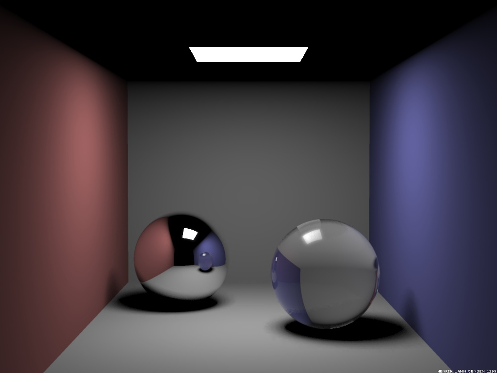
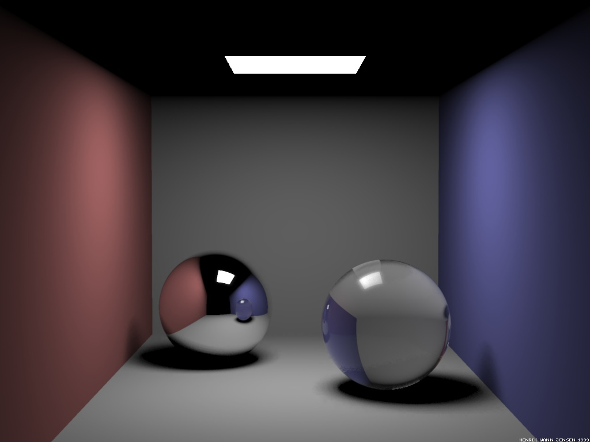

 
Summary
The purpose of this project is to improve the ray tracer developped during the semester with path tracing so that it can generate more realistic effects like global illuminations and soft shadows.
Goals and Deliverables
Minimum Implementation
- Diffuse objects
- Soft shadows
- Global illuminations
- It will be implemented in C++.
Optional Extensions
- Transparent objects
- Caustics
Schedule
Week 10 : Initial Scene Composition
- Implement a rectangular source light
- Implement walls
- Implement boxes
- Compose a Cornell Box
Week 11 : Path Tracing I
Week 12 : Path Tracing II
Week 13 : Extensions Implementation
Week 14 : Final Work
- Debugging
- Report Redaction
- Final scenes rendering
Workload
Dynamic and fair workload distribution
Ressources
- ../Ressources/Monte-Carlo-Ray-Tracing-Cornell-Lecture.pdf
- ../Ressources/Global-Illumination-Path-Tracing-Taku-Komura-Lecture.pdf
- ../Ressources/Path-Tracing-Matthias-Teschner-Lecture.pdf
- en.wikipedia.org/wiki/Path_tracing
- scratchapixel.com/lessons/3d-basic-rendering/global-illumination-path-tracing